magi
The harness. The conversation, the screen, the registry and the permission ledger — and the only one of the four a person runs. It runs no tool of its own.
What it owns
- The turn loop. Rendering what balthasar laid out, reading what the model wants, and deciding what happens next.
- The screen. The transcript as blocks in native scrollback — a running command
stays live in its own, and one can be pinned or searched — live streaming, and an
editor-grade prompt with
:commands for everything a session can be asked. - The registry. One name, one entry — whatever the tool's transport. Every tool
that touches the machine is supplied by the tools role;
magi's own builtin is
spawn. - Who decides. The permission ledger, standing rules, and the mode — you, you for anything but an edit here, a second model, or nobody.
- The session. Its id, its socket, and which program holds its transcript — whatever fills the memory role.
- The helpers. When balthasar hands out a job — a summary, notes to draw from a turn, two claims to reconcile — magi runs it on whichever model that kind of work is given.
- Other agents.
magi fork, or a model callingspawn, starts a child session;magi.agentsnames the kinds it may start. The screen moves between them from the keyboard. See sessions. - Skills.
/skill <name>puts a Markdown workflow into the conversation. See skills.
What it does not own
Which endpoint a model lives at, what credential it takes, what a 429 means, what a run has spent — melchior's. What a tool does, and the jail it runs in — casper's. What a request holds and what is worth remembering — balthasar's. A config here that held an opinion about any of them would be a second catalog to keep in step.
The shape of it
magi
eleven cratesAt a terminal
magi a session in this directory magi -p "…" one prompt, one answer, no terminal magi --resume carry on from this directory's most recent session magi doctor what a session here would be made of, without starting one magi fork "…" start a child session of this one, and print what it is called magi --headless a session with no terminal, reachable until something ends it magi --attach <id> another screen on a running session; --view-only to watch magi tools every tool the model can call, and how each is reached magi models what melchior says this machine could talk to magi acp the same sessions, for an editor that speaks ACP
magi doctor never fails. A configuration that will not load is reported rather than exited over — the whole point is to be usable on the machine where something is wrong.There is no daemon
There was. magi spawned magi host as a background child that
owned the journal and the socket, and a UI quitting was a detach. Two problems
followed. The daemon's socket was named after the working directory, so the second
magi in a project found the first one's session. And nothing ever ended one, so
a week of work left a process per project.
The session is the process now. It binds a socket of its own, named after the session
and not the directory, so a second screen can attach to it — and returning from
magi is still the end of it. A session that should outlive its terminal says so:
--headless.
In an editor
magi acp speaks the Agent Client Protocol on stdio, for an editor that
drives agents that way. It starts ordinary magi sessions — the same turn loop, the same
permissions, the same memory — rather than being a second agent. It is marked experimental,
and it advertises only what it does: a session can be created, loaded, prompted and
cancelled, with permission questions passed to the editor.